Фотографии взяты из Wikimedia Commons и используются по свободным лицензиям. Ниже — авторы, лицензии и ссылки на исходные файлы.
| Файл | Имя | Оригинал | Автор | Лицензия | Источник |
|---|---|---|---|---|---|
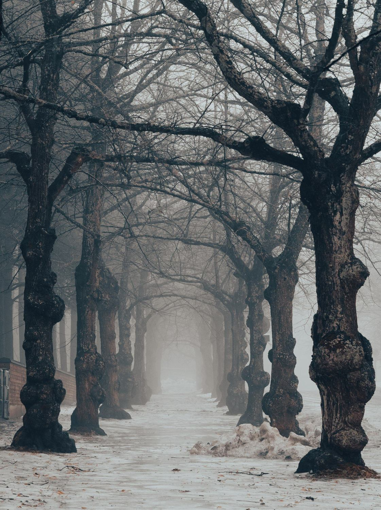 | alley-fog.jpg | Linden trees in the fog | Xannima | CC BY 4.0 | Commons |
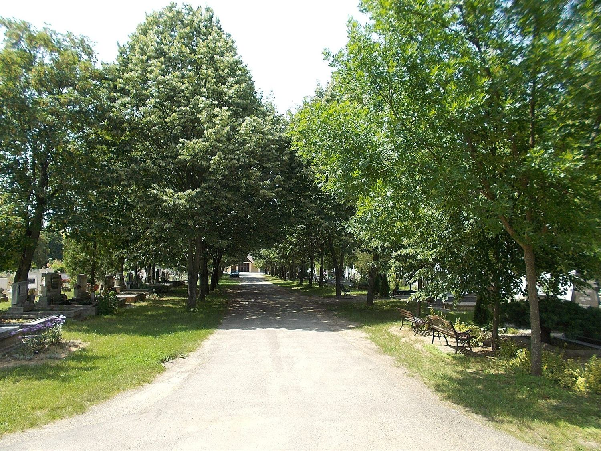 | cemetery-alley.jpg | Alley in the New Cemetery of Gyomro, Hungary | Globetrotter19 | CC BY-SA 3.0 | Commons |
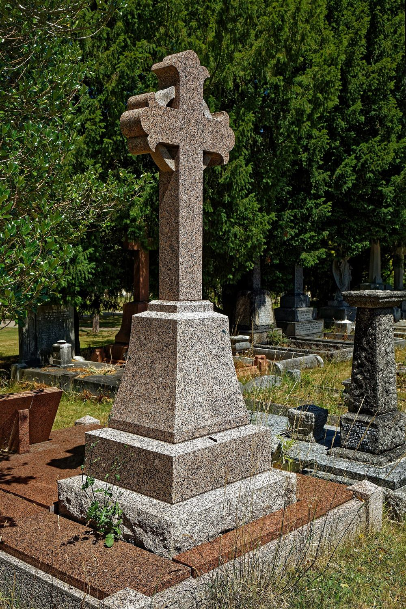 | monument-cross.jpg | City of London Cemetery, pink granite Cross flory monument | Acabashi | CC BY-SA 4.0 | Commons |
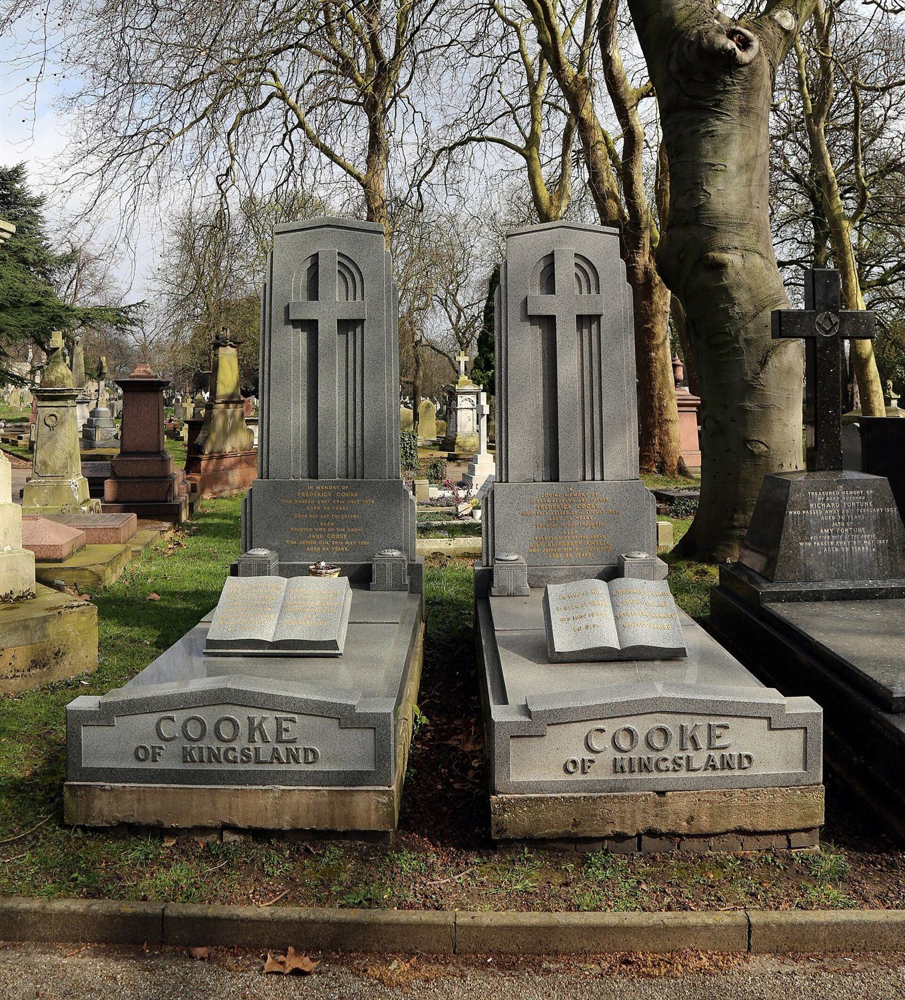 | monument-family.jpg | Cooke of Kingsland grave memorial | Acabashi | CC BY-SA 4.0 | Commons |
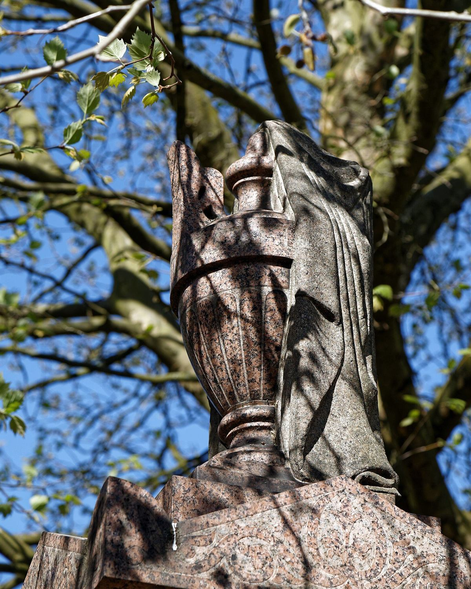 | monument-premium.jpg | Monumental granite urn, City of London Cemetery | Acabashi | CC BY-SA 4.0 | Commons |
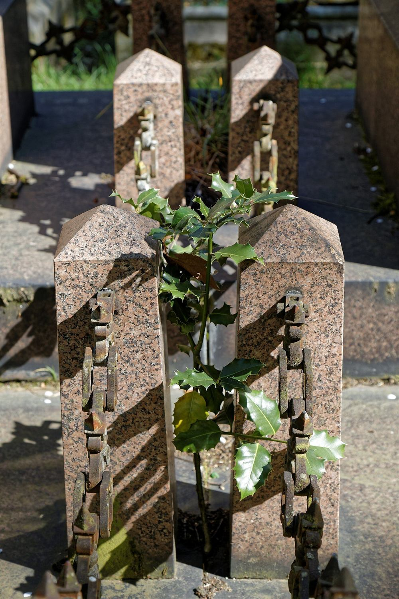 | fence-granite.jpg | Granite post and cast iron chain monument fence | Acabashi | CC BY-SA 4.0 | Commons |
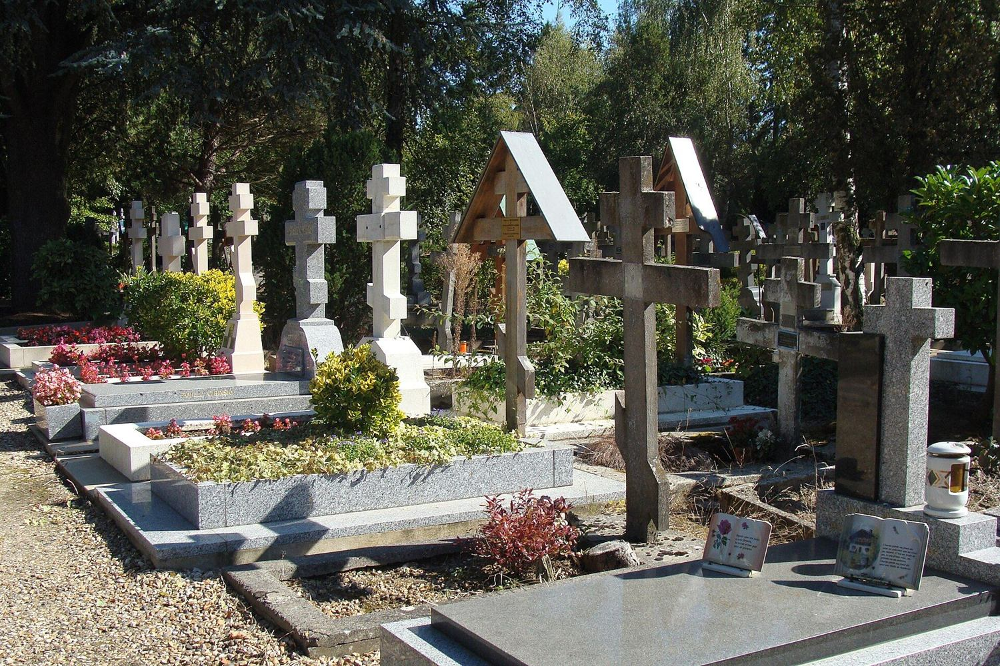 | orthodox-graves.jpg | A row of Russian Orthodox graves | Ivonna Nowicka | CC BY-SA 4.0 | Commons |
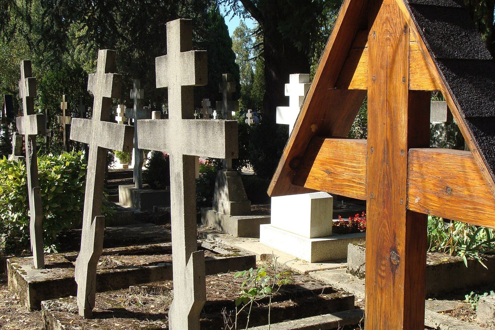 | crosses-cluster.jpg | Crosses at the Cimetiere de Liers | Ivonna Nowicka | CC BY-SA 4.0 | Commons |
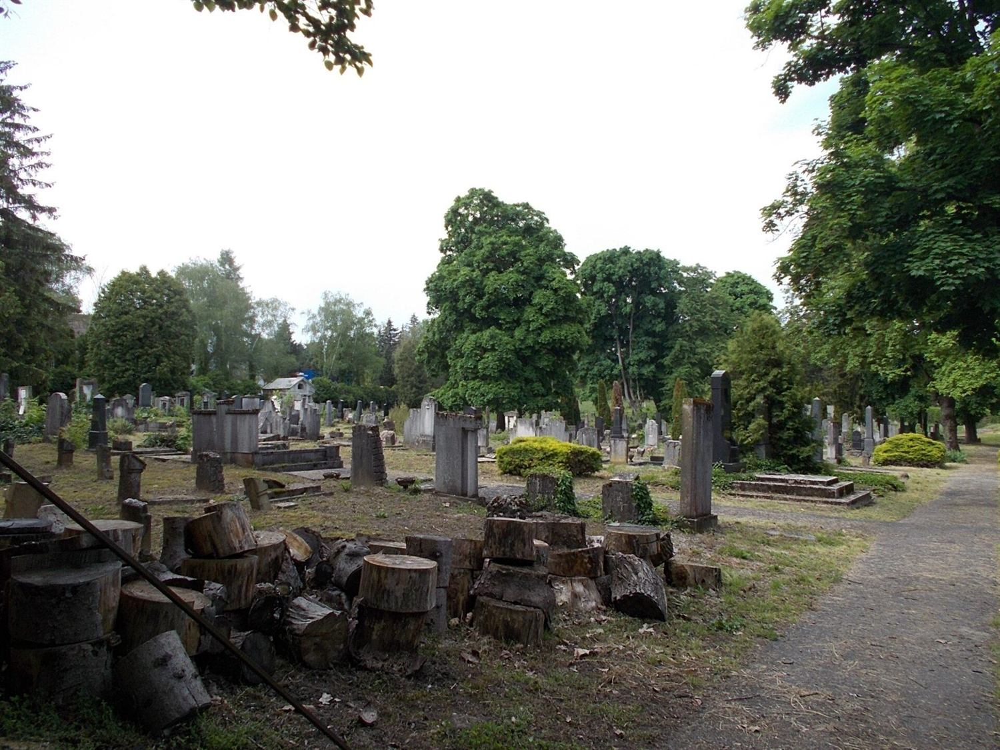 | cemetery-rows.jpg | Judischer Friedhof, Nagykanizsa | Globetrotter19 | CC BY-SA 3.0 | Commons |
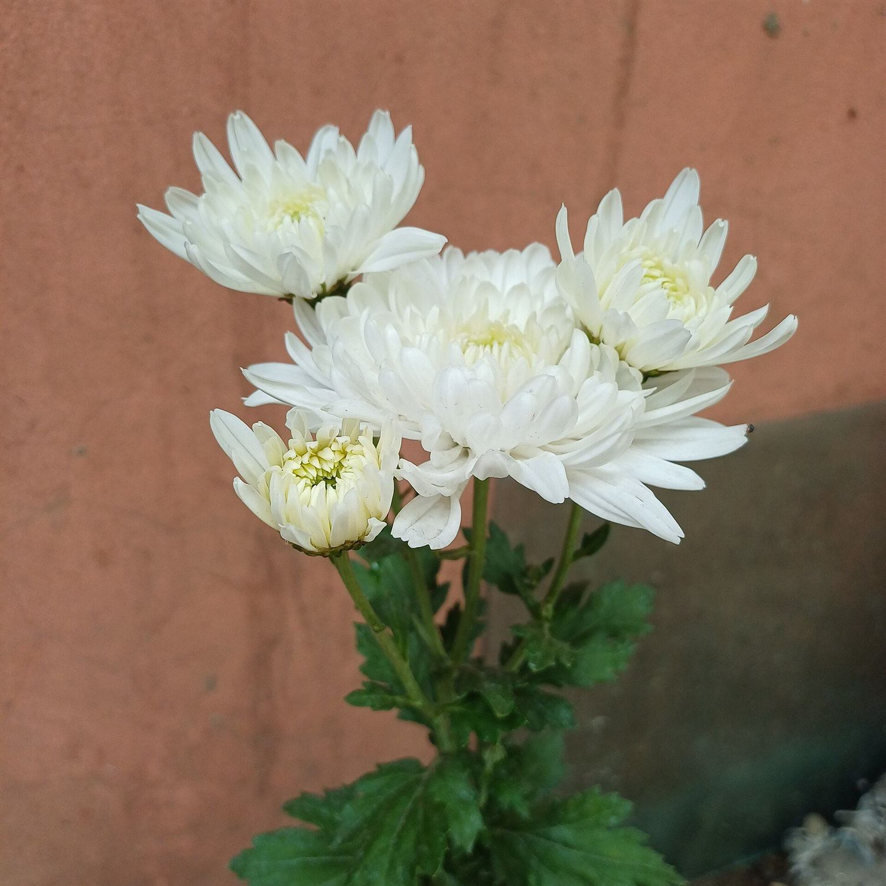 | flowers.jpg | White Chrysanthemum Flowers | Rubel Das | CC0 | Commons |
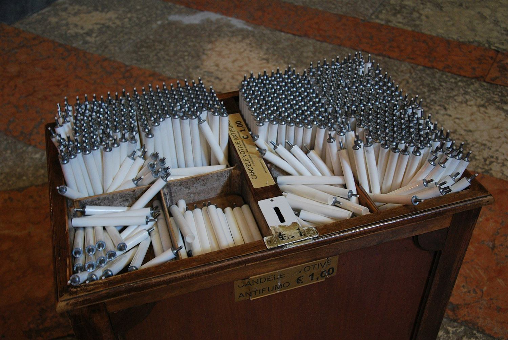 | candles.jpg | Prepared candles in church in Ferrara | Zorro2212 | CC BY-SA 4.0 | Commons |
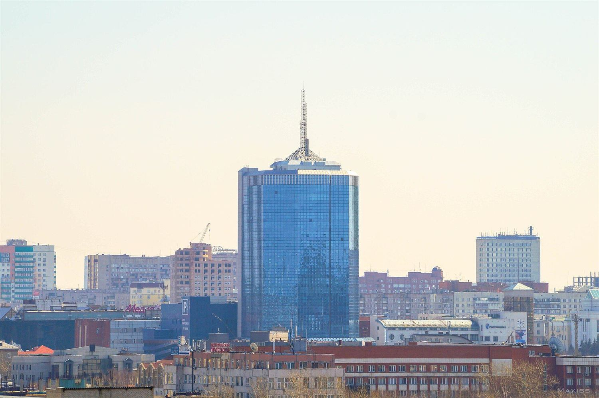 | chelyabinsk.jpg | Chelyabinsk City | Maxiss | CC BY-SA 3.0 | Commons |
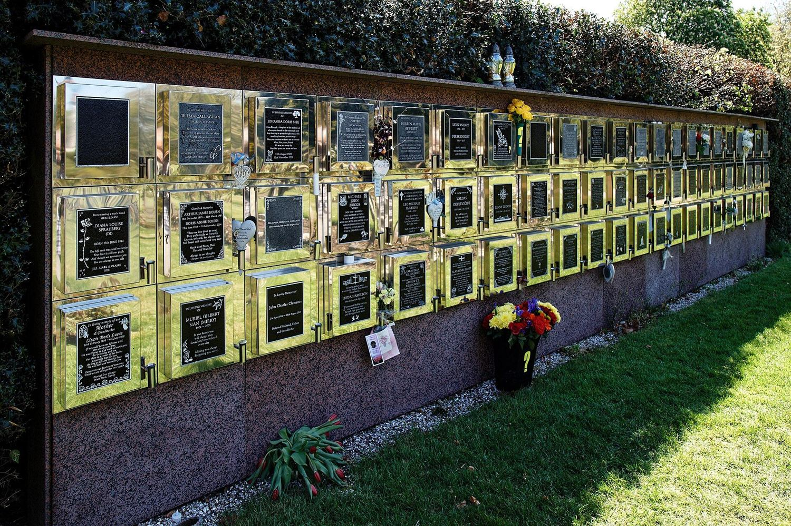 | columbarium.jpg | Granite memorial wall, City of London Cemetery | Acabashi | CC BY-SA 4.0 | Commons |
← Вернуться на сайт
Если вы правообладатель и хотите изменить условия использования — свяжитесь с нами: sizareva91@gmail.com